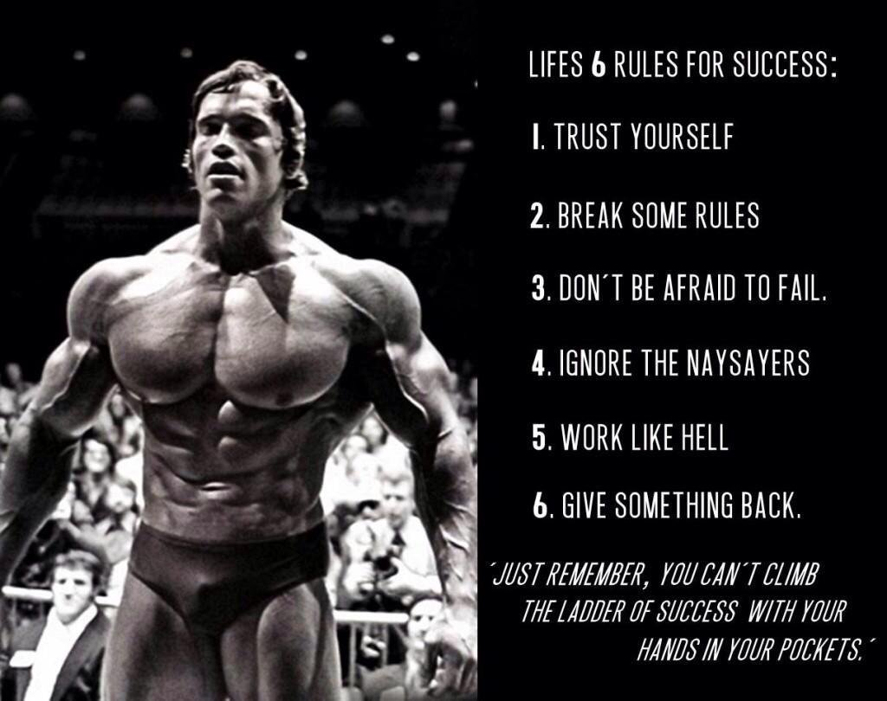

Imagine yourself in Gold's Gym in Venice, California, in 1968. It's a sunlit room lined with bricks and packed with well-loved benches, dumbbells, and barbells all being put to use. Everywhere you look, you see broad shoulders, narrow waists, and massive
arms. But your eye keeps returning to one tall, mop-headed young guy as he does heavy dumbbell pull-overs barefoot on a bench.

You nudge the blond bodybuilder to your left and ask who that is. "Arnold? He's the big kid with muscles and an odd accent from Europe," he says. "He won bodybuilding contests over there—Germany, I think—and dresses funny. Looks like
he learned to lift at Camp Munich." That's how Dave Draper recalled his early perception of Arnold in an interview with Bodybuilding.com in 2008. But all ribbing aside, he and the other Venice Beach boys knew even then that Arnold was on a
trajectory all his own.
"We liked him, helped him, taught him by not teaching him, and watched him grow and grow," Draper recalled. "The rumble you heard in the background was bodybuilding in its early stages of take-off. Five, Four, Three, Two, One..."
Now it's your turn to take off. Over the next eight weeks, you're going to train and eat like Arnold in the days when he was forging the physique that introduced bodybuilding to the mainstream. But that's not all. You're going to steep yourself in his
legend, in the form of stories, videos, and lore from Arnold and the training partners who knew him best. If you think Arnold's Blueprint is just an arrangement of reps and sets, you need a lesson in what truly made him the greatest of all time.